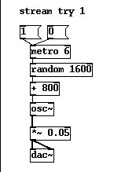
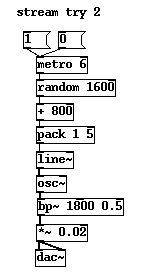
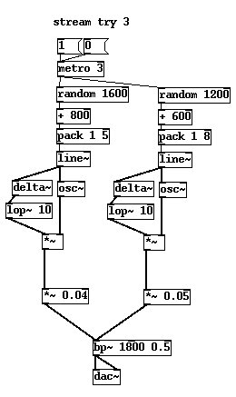
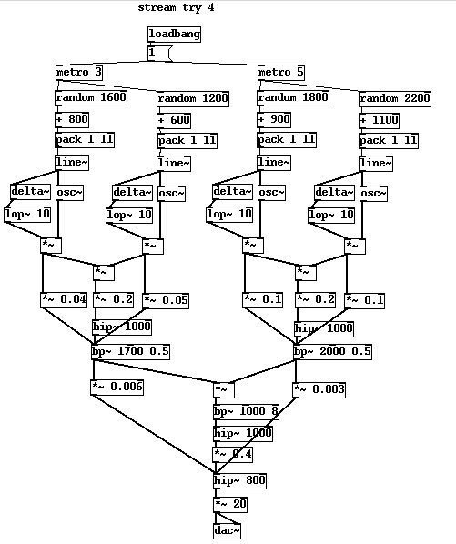
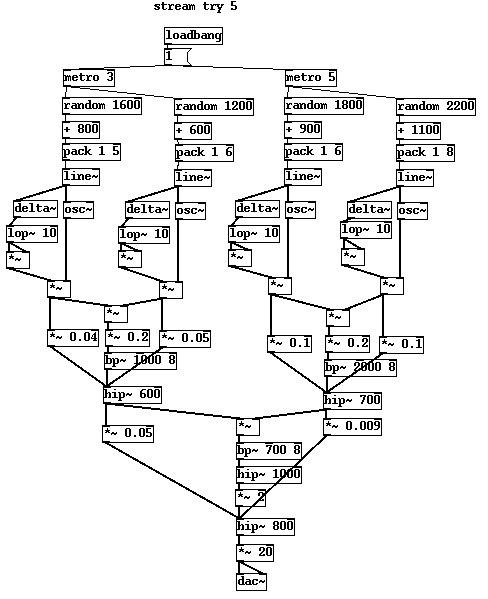

Running water is not easy to synthesise. It's one of those sounds we nearly synthesise quite by accident in a number of ways
None of these lend themselves well to efficient clientside synthesis or yield predictable results. The problem is that no two recordings of running water sound remotely alike, water running in a bath is quite different from water running in a hand basin, or a shower, and the sound of a river is very different to water flowing in a pipe or gutter. A few factors influencing water sounds are,
McAdams and Bigand doesn't specifically mention water, but we can use a some of this perceptual psychology and extrapolate a few good reasons why water is identified as such by the brain. Sounds which have a common formant and similar spectrum happening in a continuous timeframe are ascribed to the same source. Macrofeatures of sound, like the average spectral distribution suggest underlying causes, crunchy sounds suggest the presence of granules or particles, and flowing sounds suggest a fluid basis. Simple discrete sounds suggest a simple, single source while very dense and complex continuous sounds indicate a collection or expanse of sources.
Let's reason by considering two limiting conditions. What is the most complex imaginable sound of water? The answer is the sea on a stormy day, or maybe the sound of a vast waterfall. What does this sound like? It sounds a lot like pure white noise, a spectrum so dense and expansive that no single event can be heard within it. On the other hand what is the simplest sound we can associate with water? It is indeed the bubble we created in the last exercise, a single event producing an almost pure sinewave moving somewhere in the 1kHz to 4kHz range. Now, this gives a clue. It would be fatuous to say that the sound of running water lies somewhere between a sinewave and noise, because in fact all sounds do, but it isn't without merit to say that the mechanism of running water is somehow connected to the composition of thousands of droplet like sounds all together.
Let's begin by taking a sinewave and applying a randomly moving signal to its frequency, this should give us a texture that at least hits on some of the properties we would expect to find in moving water. An important choice is the granularity, or the frequency of the controlling low frequency source. Using audio rate noise is much too dense, so we will operate with the control rate signals to obtain variations that happen in the 1-100ms range. The puredata patch below uses a metronome to trigger random numbers in roughly the range we are interested in. We don't want fluctuations going all the way down to zero so let's add a fixed offset of a few hundred Hz to get the base of the sound spectrum. Notice that the patch is attenuated quite a lot. You may have to turn up the volume to hear it, but the volume limiter is for a good reason. It's possible to make some very unpleasant and potentially damaging sounds using this patch so that's why I've crippled the output significantly.

What bothers us most about this result is the occasional clicking noise. Sure it has a vague resemblance to water, but a kind of alien sound like a broken shortwave radio too. When the random generator switches values there's no assurance that it won't happen right in the middle of an oscillator cycle, and if the new value is a large change we get an unpleasant discontinuity in the sound. In the next patch we improve this using two methods. Firstly we take an audio rate line segment and get it to track the incoming random values at a fixed change value. This sets a "slew rate" , the minimum time the signal can take to move between the most extreme values is 5ms. Also we added a mild bandpass filter to the patch in a hope to knock down any clicks which contain too much high frequency.

There's still a few things not right about it though. One is the perceived frequency distribution. Our random source gives us a range of evenly distributed values, not what we want. In a later example we will use a source of gaussian or binomial distributed noise which is more natural, but for this patch we are going to apply a quick fix so we neither have to use strange external atoms nor overcomplicate the patch. Our ears tend to notice three frequencies, the two boundaries at the lower and upper ranges of the signal and we also imagine a third frequency to be prominent even though it isn't, the pitch centroid of mean pitch value of the sound. This comes across as if there were three strong pitches in the sound. In fact these pitches are statistically no more likely to be in the sound than any other. A method which largely eliminates this phenomena is to use the [delta~] atom. This returns the first differential of a moving audio rate signal. How is this useful? Well remember that we tend to hear sounds that change more than sounds that don't. If we take the first the difference of the modulator signal and use this to control the amplitude of the sound it accentuates the tones that move the greatest distance. When the tone hangs about at very similar frequencies its amplitude is now low, but if it sweeps across a large range its volume becomes higher. Lastly we have duplicated our source to get another band of random sinewaves operating in a slightly shifted range.

That's an improvement, but there still isn't much scale to the sound, it sounds like someone pissing in a basin not the mighty Amazon river majestically flowing along. We could duplicate this patch many times and tune each to a different band, but we need to keep our eye on efficiency. For the last step lets take advantage of what we learned about modulation earlier. Now we have two random sine generators we can get a bunch of extra overtones almost for free by multiplying them together. Some of the resulting harmonics are way outside the boundaries acceptable, so a bandpass filter with quite a harsh resonance helps to fix that. Performing this duplicate and modulate stage one more time takes us roughly into the sort of texture we want.

It's still not an amazing sound, there are still artifacts from the AM process and problems with the distribution that need attention. To stop malingering frequencies I've taken the square of the first difference in the next patch, and also rearranged the order of filtering to limit the sidebands from the AM process some more.

It's getting there. Have a play about with parameters and see if you can improve this patch, it can be done by carefully staggering the bands of each generator, fiddling with the slew rates and more carefully altering the bandpass filters on the AM blocks.
Put on your wellingtons and grab an umbrella then continue to the next tutorial